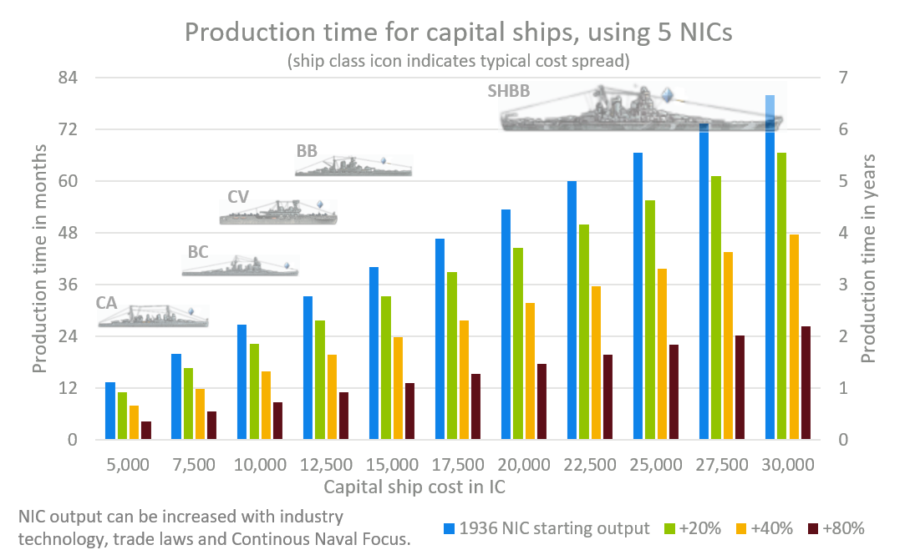
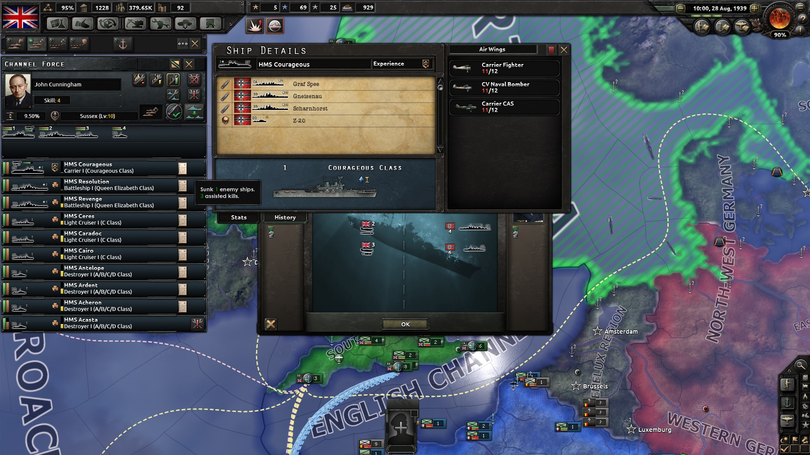

舰船
原页面：Ship
舰船既指出船坞生产的装备，也指下水并配备人员后、随时可参与海战的特遣舰队成员。
船体类型
船体是舰船的基础部件，通过海军科技解锁。每种船体类型都包含若干模块槽位，其数量与限制取决于具体船体类型。这些模块可以通过舰船设计器装入槽位，从而形成可由 海军船坞生产的完整舰船设计。
海军船坞生产的完整舰船设计。
游戏开始时，每个国家都会根据已研究的船体类型获得一批可供生产的既有舰船改型。
某些船体类型可以作为不止一种舰船类型的基础，取决于设计该舰船改型时所装的模块。例如，巡洋舰船体既可以作为轻巡洋舰的基础，也可以作为重巡洋舰的基础，取决于所装火炮的类型。
船体类型及其对应的舰船类型如下：
| 船体类型 | 舰船类型 |
|---|---|
| 驱逐舰船体 | 驱逐舰 |
| 巡洋舰船体 鱼雷巡洋舰船体 | 轻巡洋舰 重巡洋舰 |
| 装甲舰船体 岸防舰船体 | 大型巡洋舰 |
| 重型舰船体 | 战列巡洋舰 战列舰 |
| 超重型战列舰船体 | 超重型战列舰 |
| 航空母舰船体 | 航空母舰 护航航空母舰 |
| 改装巡洋舰航母船体 | 护航航空母舰 |
| 潜艇船体 巡洋潜艇船体 | 潜艇 |
| 舰队潜艇船体 | 潜艇 弹道导弹潜艇 |
| 核潜艇船体 | 核潜艇 核弹道导弹潜艇 |
舰船类型
水面军舰分为主力舰和护卫舰，而潜艇与运输船队则有其独特的机制。
主力舰
作为主要的水面战斗力量，主力舰的设计目标是在水面战斗中用炮火击沉敌舰。

- 战列舰（BB）：凭借厚重装甲，战列舰能够承受敌方战列线的大量火力，自身也能造成相当可观的伤害。战列舰造价高昂，建造也颇费时间。
- 战列巡洋舰（BC）：战列巡洋舰与战列舰共用相同的船体并使用同类武器，但装甲略轻、建造成本更低。虽然承受伤害的能力不如战列舰，但更轻的重量使它们速度更快，也更难被命中。
- 超重型战列舰（SHBB）：超重型战列舰是基于专用 SHBB 船体建造的特别强大、装甲极厚的战列舰，不过在游戏中仍被称为 BB。与其他船体随年代不断推出新版本不同，科技树中只有一种 SHBB 船体。尽管缺少船体迭代，超重型战列舰的强大程度仍足以在整个游戏中保持威慑力。但它们的造价高得离谱，建造时间也非常长。
- 重巡洋舰（CA）：重巡洋舰与轻巡洋舰共用相同的船体，区别在于火炮更重。由于装甲是主力舰中最轻的，重巡洋舰在面对战列巡洋舰和战列舰时生存能力较低。
- 大型巡洋舰（CB）：大型巡洋舰是使用更昂贵的装甲舰与岸防舰船体建造的专用重巡洋舰，不过在游戏中仍被称为 CA。它们可以安装与战列舰和战列巡洋舰相当、甚至更重的火炮。然而，尽管造价与战列巡洋舰相当，它们的装甲却与普通重巡洋舰一样轻，因此生存能力并不更强。
- 航空母舰（CV）：专用航空母舰可以搭载专门的舰载航空队执行各种任务，包括在海战中争夺制空权并对敌舰投弹造成伤害，也可以在这些战斗之外部署执行任务。它们的建造与燃料消耗都很昂贵，尤其是还要配上舰载机，但以其造价而言可能极为高效。
- 护航航空母舰（CVE）：更小更便宜的航空母舰，只有一两个机库槽位，这些设计可通过舰船设计器实现，不过在游戏中仍被称为 CV。它们既可以用与专用航母相同的船体建造，也可以由巡洋舰改装而来，这可以让海军老旧的巡洋舰继续发挥作用更长时间。它们速度慢、能搭载的航空队更少，因此战斗力较弱，但由于可以大量生产，可以部署的范围要广得多。
护卫舰
护卫舰之所以得名，是因为它们能在海战中保护主力舰和运输船队免受鱼雷攻击。
- 轻巡洋舰（CL）：比驱逐舰更坚固也更昂贵，轻巡洋舰用途极为广泛，可以装备成承担多种角色。装设飞机弹射器时，它们可以充当出色的侦察舰；专注于火力时，它们擅长摧毁其他护卫舰，甚至能对装甲较轻的敌方重巡洋舰造成损伤。
- 驱逐舰（DD）：作为最轻的护卫舰，驱逐舰的优势在于数量。战斗中，它们可以构成护卫线的主体，保护主力舰免受鱼雷攻击。驱逐舰也非常适合执行运输船队护航任务。这两个角色都需要足够的数量，而驱逐舰是达到所需数量时最经济的选择。它们的燃料需求也相对较低。除基本武器外，还可以加装额外火炮以提高对付其他护卫舰的效能，或加装鱼雷以威胁主力舰。延伸阅读：1936 start legacy deployed destroyers列表。
潜艇
- 潜艇（SS）：廉价、缓慢且隐蔽，潜艇常被用作袭击运输船队和布设水雷。在海战中，潜艇在特定情况下可以处于隐蔽状态，从而免受攻击；即使被发现，也只有使用深水炸弹的其他舰船才能伤害它们。不过，它们特别容易遭到巡逻飞机攻击，尤其是在战斗之外。
- 核潜艇（SSN）：核潜艇是随《诸神黄昏》推出的特殊潜艇，使用核动力而非内燃机。因此它们不消耗燃料，作战半径极长，但比更先进的非核潜艇更容易被发现，而且生产所需的技术积累很大。

- 导弹发射潜艇（SSB）：导弹发射潜艇，又称弹道导弹潜艇，是随《诸神黄昏》推出、装备导弹发射舱的潜艇。因此它们可以作为机动导弹发射平台执行多种任务，但也需要大量技术积累。
- 核导弹发射潜艇（SSBN）：核导弹发射潜艇，又称核弹道导弹潜艇，是随《诸神黄昏》推出的核潜艇与弹道导弹潜艇的结合体。能够从世界任何地方悄无声息地发射多种导弹，是非常强大的组合，但需要极其庞大的技术投入。
运输船队
运输船队是运载陆军单位、资源、贸易、补充兵和租借装备穿越水域的船只。与其他所有舰船类型相比，它们被更抽象地处理，拥有一系列独特机制。
运输船队具有以下特征：
- 运输船队基本没有武装，只装有 0.25 门轻型火炮（穿甲 1）和 0.1 门防空炮。[1]
- 无论何种地图模式，运输船队的位置都不会显示在地图上。（船队航线可以在战略海军地图模式上看到。）只有海战中才能直接看到运输船队，例如当某个破交作战特遣舰队自动拦截了一些船队时。
- 受损的运输船队无需返回船坞修理。任何在战斗中受损（但未被摧毁）的船队都会在战斗结束后立即恢复到完好状态。
- 当前未使用的运输船队保存在抽象的后备池中，在游戏世界里没有实体存在。
- 玩家不能直接控制运输船队。不过，可以通过为特定区域设置准入等级来影响船队航线。
- 船体与模块的概念不适用于运输船队。只有一种标准运输船队型号，也没有解锁更先进船队型号的科技。
- 无法创建运输船队的改型或设计。
- 运输船队不消耗
 燃料。
燃料。 - 运输船队无法命名。
- 运输船队可以租借给他国，也是唯一能以这种方式转让的舰船（和平会议和特殊决议除外）。
运输船队面对敌方军舰毫无防御能力，但可以由友方军舰护航以获得保护。
浮动港口
浮动港口（有时称为桑树港）是可以在海军入侵中充当临时 补给枢纽的“舰船”。如果你至少拥有一个，就能使用一种特殊的海军入侵命令，在登陆敌方海岸时会自动使用它们。它们会在海军入侵地点建立一个物资充足的补给中心，但只会维持一段时间后消失，时长取决于多种因素。生产浮动港口需要
补给枢纽的“舰船”。如果你至少拥有一个，就能使用一种特殊的海军入侵命令，在登陆敌方海岸时会自动使用它们。它们会在海军入侵地点建立一个物资充足的补给中心，但只会维持一段时间后消失，时长取决于多种因素。生产浮动港口需要 登陆艇科技。生产一个浮动港口至少需要海军船坞
登陆艇科技。生产一个浮动港口至少需要海军船坞 ，花费 400 生产花费和 1 个。
，花费 400 生产花费和 1 个。


准入等级
对于任何包含海域的战略区域，都可以设置准入等级来决定舰船能否进入该区域。
舰船详情
左键点击舰队中的舰船剪影即可调出该舰的详情。在这里可以看到它的各项统计数值，第二个标签页还会显示战斗历史。点击舰船名称可以重命名该舰。航空母舰会显示其配属的航空队；重组航空队需通过航空队管理系统完成。要拆解／解散一艘舰船，请点击舰船详情界面右上角的红色垃圾桶图标，这会把它的人力返还到资源池，也是把老旧舰船送去执行自杀式任务之外的另一种选择。
舰载航空队
建造航空母舰时，玩家可以预先设定其航空队的编成方式。只有舰载机型才能驻扎在航母上，而且必须与陆基同型机分开生产，并（视 唯有鲜血是否启用而定）单独研究或设计。现有航母的航空队可以通过在空军总览中选择该航空队来调整，也可以在空军地图模式中选择一个空域，调出所有基地的列表，然后选择该航母所属的舰队，从而调出该舰队中所有航母的空军基地窗口。在（航母）基地窗口中，其操作与在空军基地建立或管理航空队完全相同。
唯有鲜血是否启用而定）单独研究或设计。现有航母的航空队可以通过在空军总览中选择该航空队来调整，也可以在空军地图模式中选择一个空域，调出所有基地的列表，然后选择该航母所属的舰队，从而调出该舰队中所有航母的空军基地窗口。在（航母）基地窗口中，其操作与在空军基地建立或管理航空队完全相同。
查看战斗统计

《钢铁雄心 IV》会记录每艘舰船的老练度、技能和历史，可在舰队视图中查看。选择你想查看的舰队，就会看到舰队中每艘舰船都列有绿色组织度条和棕色兵力条、舰级的剪影、显示该舰经验等级的军衔图标、显示该舰距离下一等级已积累多少经验的纵向进度条，以及舰船名称。如果该舰参加过战斗并击沉过敌舰，舰名旁会额外出现一个历史图标。把鼠标悬停在该历史图标上，会显示你用这艘舰击沉了多少艘敌舰的概要；点击该历史图标会打开舰船详情弹窗，显示该舰击沉舰船的历史。
统计数值
每一类舰船都有一系列被称为“属性”的数值，下面逐一说明。其中大多数属性都可以通过建造新的设计来提高。研究海军学说也能提升某些属性，聘用合适的海军上将、以及在一步不退下使用 军官团精神同样有效。某些国策还能提供影响特定舰船属性的国家精神。
军官团精神同样有效。某些国策还能提供影响特定舰船属性的国家精神。
基础属性
- 最大速度。 最大速度表示海军舰船在最佳条件下能多快移动。速度更快的舰船更容易摆脱追击者，也更不容易被敌方火力命中，发现敌人时能更容易地追蹤接触目标，能更久地躲避敌方巡逻，在战斗之外移动也更快。
- 最大航程。 舰船航程代表其舰上携带的燃料与食品储备，它会限制该舰能离开最近的友方
 海军基地多远。
海军基地多远。 - 组织度。 组织度表示舰船的战斗准备程度。舰船的组织度越高，能在战斗中坚持得越久。组织度低或为零的舰船无法有效作战或移动。另见命中几率机制。
- 甲板容量。 甲板容量衡量一艘航母能搭载多少架飞机。超出航母甲板容量（飞机上限）的行为被称为航母超载，会导致航母飞机任务受到惩罚。另见出动效率。
- 生命值。 HP 是“生命值”的缩写，指承受伤害的能力。它代表兵力，即一艘舰船在被摧毁前能承受多少伤害。
- 可靠性。 可靠性指舰船在战斗中持续运作的能力。数值越低，舰船越容易遭受致命一击。舰船遭受的致命一击可能远强于普通命中，主要原因是弹药库或燃料舱爆炸。提高舰船可靠性会降低所受命中变成致命一击的几率。请注意，致命一击几率最高的是鱼雷而非舰船主炮。参阅损耗与事故。
- 补给消耗。 该单位每天消耗多少补给。关于其重要性请阅读补给。
战斗属性
- 轻型攻击。 轻型火炮造成的伤害。轻型火炮更擅长瞄准较小的舰船，但只能攻击海战中第一排非空的舰船。
- 轻型穿甲。 轻型火炮的穿甲能力。
- 重型攻击。 重型火炮造成的伤害。重型火炮更擅长瞄准较大的舰船，可以攻击海战中前两排非空的舰船。
- 重型穿甲。 重型火炮的穿甲能力。
- 鱼雷攻击。 鱼雷攻击表示舰船用鱼雷伤害敌舰的能力。鱼雷可以攻击海战中的任何一排，但可能被护卫效率阻挡。
- 深水炸弹。 深水炸弹表示舰船用深水炸弹伤害敌方潜艇的能力。深水炸弹是唯一能伤害潜艇的舰载武器。
- 装甲。 装甲表示舰船的钢甲板厚度、舷侧厚度、舱壁等。装甲的作用是保护舰船免受攻击。见海战。
- 防空。 防空，又称海军防空攻击，表示舰船防空火炮在击落瞄准该舰的敌机时能提供的火力。它还能对空袭提供少量减伤。另见海军打击机制。
其他属性
- 燃料消耗。 单位运作时消耗多少燃料。海上单位在执行任务或训练时会消耗燃料，但静止不动时不会。其燃料消耗量随所执行任务的类型而变化。
- 水面可见度。 水面可见度表示舰船的轮廓大小。数值越高，水面舰船越显眼，在战斗之外越容易被发现，战斗中也越容易被命中；数值越小，舰船越不显眼，在战斗之外越难被发现，战斗中也越难被命中。
- 潜艇可见度。 与水面可见度类似，但只适用于潜艇。在战斗之外，它与水面可见度共同决定潜艇被巡逻舰船或飞机发现的快慢；在战斗中，它决定隐蔽中的潜艇被暴露的快慢，以及被暴露的潜艇在被再次隐蔽前被深水炸弹命中的难易程度。
- 水面侦察。 水面侦察指舰船发现海面上（而非海面下如潜艇）航行敌舰的能力。舰队只有在知道对方存在时才能与之交战。水面舰队一开始是隐蔽的，若靠敌方舰船或巡逻飞机太近就有被发现的机会。水面侦察也有助于袭击舰（包括潜艇）避开敌方巡逻，减缓其被发现的快慢。参阅海战 侦察。水面侦察可通过以下方式提高：
- 向具有高水面侦察值的舰队或海域增派舰船。特遣舰队的水面侦察值是其各舰的平均值，因此加入水面侦察值较低的舰船反而会降低该特遣舰队的侦察能力。
- 向海域增派飞机，尤其是在拥有制空权时
- 提高某海域的
 雷达站覆盖范围
雷达站覆盖范围 - 解密能力优于敌方舰船的加密能力时，会提供+20%[2]的水面与潜艇侦察加成
- 研究更好的水面侦察科技。这由雷达科技涵盖。
- 研究包含水面侦察加成的海军学说
- 在《抵抗运动》中，通过在目标国建立特工网络、抓捕其特工、破解其密码并使用侦察机来获得额外海军情报

- 潜艇侦察。 潜艇侦察指舰船发现敌方潜艇的能力。舰队只有在知道对方存在时才能与潜艇交战。潜艇狼群一开始是隐蔽的，若靠敌方舰船或巡逻飞机太近就有被发现的机会。一旦进入战斗，隐蔽的潜艇[[可以长期保持这种状态，即使面对专门的反潜舰船也是如此，因此抢得先机、迫使它们以暴露状态开始战斗，对击败它们至关重要（这也是它们在战斗之外特别容易遭到飞机攻击的原因）。潜艇侦察可通过以下方式提高：
- 向具有高潜艇侦察值的舰队或海域增派舰船。特遣舰队的潜艇侦察值是其各舰的平均值，因此加入潜艇侦察值较低的舰船反而会降低该特遣舰队的侦察能力。一般来说，只有专门执行反潜战的驱逐舰、轻巡洋舰和重巡洋舰才具备足够的潜艇侦察能力。
- 向海域增派飞机，尤其是在拥有制空权时。潜艇特别容易被飞机发现并摧毁。
- 提高某海域的雷达站覆盖范围
- 解密能力优于敌方舰船的加密能力时，会提供+20%[2]的水面与潜艇侦察加成
- 研究更好的潜艇侦察科技。这由海军科技和雷达科技涵盖。
- 创建包含更高潜艇侦察值的舰船设计
- 聘用设计公司（无
 反抗暴政时）或资助军工组织（有反抗暴政时）以提高潜艇侦察
反抗暴政时）或资助军工组织（有反抗暴政时）以提高潜艇侦察 - 研究包含潜艇侦察加成的海军学说
- 聘用专精反潜战的最高统帅部人物
- 在《抵抗运动》中，通过在目标国建立特工网络、抓捕其特工、破解其密码并使用侦察机来获得额外海军情报
参考资料
| 政治 | 意识形态 • 阵营 • 国策 • 理念 • 政府 • 傀儡国 • 流亡政府 • 外交 • 世界紧张度 • 内战 • 占领 • 力量均势 |
| 生产 | 贸易 • 生产 • 建造 • 装备 • 燃料 • 军工组织 • 国际市场 |
| 科研与科技 | 科研 • 步兵科技 • 支援连科技 • 装甲科技（也包括 未拥有绝不后退）• 火炮科技 • 陆军学说 • 特种部队学说 • 海军科技（也包括 未拥有全民持枪）• 海军支援科技 • 海军学说 • 空军科技（也包括 未拥有以血盟誓）• 空军学说 • Engineering科技 • Industry科技 • 特殊项目 • 科学家 |
| 军事与战争 | 战争 • 和平会议 • 陆军单位 • 陆战 • 师编制设计 • 坦克设计 • 陆军编制器 • 集团军 • 指挥官 • 作战计划 • 战斗战术 • 舰船 • 舰船设计（伦敦海军条约）• 海战 • 飞机设计 • 空战 • 经验 • 军官团 • 损耗与事故 • 后勤 • 人力 • 核弹 • 突袭 |
| 间谍活动 | 情报 • 情报机构 • 特工 • 任务 • 行动 |
| 地图 | 地图 • 省份 • 地形 • 天气 • 州 |
| 事件与决议 | 事件 • 决议 |